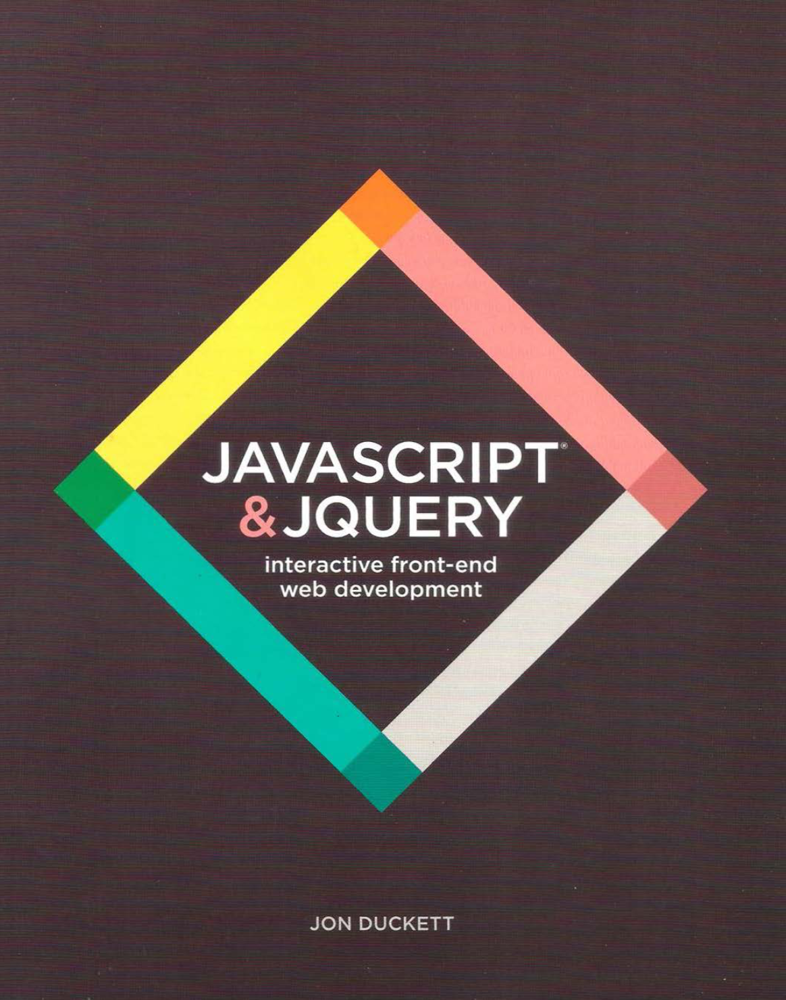

Introduction to JavaScript
Intro to JS Review Study Guide
Click here to view and make a copy for reference.
What have we learned so far?
- HTML5 - a Markup Language
- CSS3 - Web-based Technology
How is JavaScript different?

JS Introduction
JavaScript is a programming language that drives the web:
- from front-end user interface design,
- to backend server-side programming,
- at every stage of a website and web application.
JavaScript is used on nearly every website in the world.
JavaScript drives the front end of giant web applications like Google Maps, Gmail, and Facebook.
JavaScript & jQuery Textbook!
Reading Assignment
Please read the Introduction and Chapter 1
JS Exercise
Login to your account at Codecademy. Complete the Introduction to JS course by the end of this unit.

What is Javascript?
JavaScript is used to make dynamic webpages interactive.
Read more here.
What can JS do?
- Interactive image galleries
- Full featured web applications
- Keep track of users with cookies
- Interactive elements like tabs, sliders and accordions
- Drawing and animation
- Send and receive data


JS Properties
Like other languages in computer science, JavaScript has the following tools that we will cover:
- Data Types
- Functions
- Loops
- Conditional Statements
- Object-Oriented Programming
Where does JavaScript live?
For front-end project, JS, like HTML and CSS, is run in the browser.
Other tools in the browsers (like APIs, that we will cover later) help make JS run wonderfully!
Reminder! (on syntax)
JavaScript is a programming language and, like any language, it has its own vocabulary and grammar.
Programmers call this syntax.
A programming language's syntax is the different commands, special words and punctuation you use to put together a program.
Every programming language has its own syntax, just as English, Spanish and Mandarin each have their own vocabulary and grammar.
REMINDER! (ON JAVA)
Remember! ‘Java’ is not the same thing as ‘JavaScript’. They are two different languages. We will be learning JavaScript.
Quick Review 1
You can use JavaScript on a server?
- True
- False
Quick Review 2
JavaScript lets you add interactive components to a site like photo galleries, tabbed panels, or form validation.
- True
- False
Quick Review 3
JavaScript is used to build complex web applications, like GMail, Google Docs, and Google Maps.
- True
- False
Quick Review 4
JavaScript and Java are the same programming language.
- True
- False
Quick Review 5
What does "syntax" mean?
- Syntax is another programming language that is becoming as popular as JavaScript.
- Syntax is the vocabulary and grammar of a programming language. It’s a language’s words and commands as well as instructions for putting them together to create a program.
- Syntax is a command in the JavaScript programming language.
Quick Review 6
What do JavaScript, HTML, and CSS have in common?
GitHub Accounts!
- We will be learning more about Git & Github later in the training.
- For now, we will create accounts so that we can use JsBin with more options (like wrapping!)
- Important: your username is like a handle; some people strive to keep their handle gender-neutral in order to avoid bias.
See next slide for instructions.
GitHub Accounts!
- The sign-up flow will ask questions about what you are interested in, and what you do. Feel free to answer the questions in a way that feels right to you - you can always change them later.
- Once you have gone through the process and verified your email, navigate to JsBin.com, and click 'Login or Register' in the upper right corner of your screen.
- Log in with GitHub!
Click here to get started!
JSBin Preferences Settings
Click here to edit your JSBin Settings.
Statements
Each instruction in JS is a "statement", like:
console.log('Hello World!');

Each separate instruction in JavaScript is called a 'statement'. A 'simple' statement represents a single instruction and ends with a semi-colon.
Think of a simple statement like a sentence - the semi-colon is a full stop that tells JavaScript that your statement is complete.
JavaScript Console
The Developer Tools on Chrome has a JavaScript Console.
You can use JS Console to:
- find errors in your JavaScript,
- find the type of error it is,
- determine which line of code the error is on.
All browsers have a JavaScript interpreter.
A common way to track what is happening in our programs is to use the following JavaScript statement:
console.log();
JavaScript console in developer tools Part 1
JavaScript console in developer tools Part 2
You can do basic math and other functions in the console.
For instance, type 2+2 and hit enter, the console should show you the number 4.
Try it!
The console is where you will check to make sure that your program is running the way you want it to.
JS Statements
Let’s practice writing a command in JavaScript.
Open JSBin, and in the JavaScript section, write
alert();
Alert is a method that opens a dialogue box in your browser to display a message.
We write JavaScript programs by typing multiple JavaScript statements. Similarly, we write a paragraph by writing multiple sentences.
Things to Remember
- A program is a set of statements that run one after the other.
- One statement needs to be complete before the next statement runs.
Variables
Use variables to store values.
Declare, then initialize in 2 statements:
var x;
x = 5;
console.log(x);
Or declare and initialize in one statement:
var x;
x = 5;
var y = 2;
console.log(y);
Re-assign the value later:
var x = 5;
x = 1;
Variables
Variables store information we need to use in the program. A variable is a named container for a value that can vary, a value that can change.
Variables only exist when they are 'declared', when we use the 'var' keyword and the name of the variable. e.g. var z;
A variable declaration is a simple statement, so it ends with a semi-colon (;).
Assigning an initial value to a variable is called 'initializing'. e.g. z = 0; You can declare and initialize in one go (e.g. var z = 0;), or seperately (e.g. var z; z = 0;). If a variable is not declared and initialized, then it is "undefined."
Important Note!
Variable names cannot have spaces if they have multiple words in them. If they do have multiple word, you should use camel case.
Camel case means that if you have two words, the first word does not have a capital letter but the subsequent words do).
- Example: myNumber
- Example: thisIsMyCoolVariableName
- Example: favoriteFood
More on Variable Names
- Begin with letters, $ or _
- Only contain letters, numbers, $ and _
- Case sensitive
- Always have a space after 'var'
- Avoid reserved words
- Choose clarity and meaning
OK:
var numPeople, $mainHeader, _num, _Num;
var 2coolForSchool, soHappy!
Other ways to declare variables
- let when declaring 'local' variables - more on that later!
- const to declare a variable whose value will be constant; it cannot change. Const prevents the variable from being redeclared or reassigned.
- The syntax is the exact same as when you declare a variable using var
const annieCannonsCTO = "Laura";
let teachingAssistants = "Unicoders Graduates";
var instructors = "New Beginnings Graduates";
Alert Command Using Variables
var message = "Hello!";
alert(message);
message = "Hello! My name is Laura!";
alert(message);
Where does my JavaScript go?
External JavaScript
When working with a browser (not a server), it looks for the index.html file to find links to CSS and JS files.
Use the script tag and the src property to link to your JS file. This tag goes in your HTML document in the head or body:
<script src="scripts.js"></script>
Where does my JavaScript go?
Internal JavaScript
You can also insert JavaScript directly into a web page inside script tags in the head section of your HTML:
<script>
alert("Hello there.");
</script>
You can also add it right before the closing body tag. Any idea why?
Data Types in JS
Variables can be populated with any one of the 'data types' available in Javascript.
- strings
- numbers
- booleans
- arrays
- objects
There are also data types that cater for situations where there is no value: undefined and null. Loose typing- you don't tell JS what type of data type it is, it guesses. You can use typeof to see what it thinks.
Data Type 1: Strings
A string is something that would be in quotes. A string is how you would represent text, like “Beyonce”. Strings ALWAYS need to be surrounded by quotes.
In your JS Bin, enter
console.log("Beyonce");
This will have your string logged into the console so that you can see it. Try it!
Semi-colons are an important part of the syntax and appear at the end of each statement (or the end of each line) in most of your JS.
Data Type 1: Strings
Say you want to save your name (and remember, your name is a string) because we want to use it in the program you are writing.
You can use the keyword var like this
var name = "Laura";
‘name’ will become a keyword in a program, and “Laura” is the value assigned to it.
Expressions
Variables can also store the result of any "expression":
var name = 'Gaga';
var title = 'Lady';
var greeting = 'Hello ';
var formalGreeting = greeting + ', ' + title + ' ' + name;
A new command
If you want to ask your user a question in a pop up window, you can use the prompt command. It is similar to alert.
You use prompt and then generally follow that with a string.
prompt("What is your favorite food?");
Try making several prompts in JS Bin.
Prompt command
What is a way that we have learned to store the information for what the user types in?
var name = prompt("What is your name?");
console.log(name);
Another new command
document.write();
This adds text directly to your browser (NOT the console).
So, if you want to ask someone their name and then add it to your website, you can!
Combining Strings
After we prompt our user to enter their name, we want to:
- greet them by their name
- post a customized welcome message on our site (e.g., when they are logged in)
- address them personally in an email
How would we add more text to their name?
We must add the string using the + sign. Notice the spaces.
var name = prompt("What is your name?");
document.write("Hello " + name);
Combining strings is Concatenation. In JS, you combine strings with a + operator: 'one string ' + ' another string'
Concatenation
We use concatenation to personalize websites and emails.
Let’s look at the following email:
Make a Madlib
A madlib is a word game where one player prompts others for a list of words to substitute for blanks in a story, before reading the story aloud.
Let’s create a madlib game for our users with the following sentence:
“There once was a [adjective] programmer who wanted to use JavaScript to [verb] with the [noun]."
The secret about adding strings
When we get information from a user from a prompt or a web form, JavaScript stores the data as a string not a number.
Try it out:
var peanut = prompt("How many peanut butter sandwiches do you have?")
var ham = prompt("How many ham sandwiches do you have?")
var totalSandwich = peanut + ham;
console.log(totalSandwich);
What amount do you get?
new command
parseInt(); command allows you to pull the numbers you want out of the strings
var peanut = prompt("How many peanut butter sandwiches do you have?")
var ham = prompt("How many ham sandwiches do you have?")
var totalSandwich = peanut + ham;
How could we use this to get the right number of sandwiches? You need to change to:
var totalSandwich = parseInt(peanut) + parseInt(ham);
console.log(totalSandwich);
More string commands
- .length
- .toUpperCase()
- .toLowerCase()
Data Type 2: Number
Numbers do not have quotation marks around them.
A number can be an integer (also called a whole number), such as 1, 2, -10
Or a decimal number (also known as a floating point),
such as 5.4324
Numbers CANNOT by letters or symbols, including commas.
Try it!
- Create a variable called number.
- Assign your own number.
- Then log it to the console.
Data Type 2: Number
Your JS code should look like this:
var number = 47;
console.log(number);
More on numbers: Operators
Mathematical operators in JS can be applied to numbers. Example: To add two numbers, use the addition operator (+).
- + is the addition operator
- - is the subtraction operator
- / is the division operator
- * is the multiplication operator
More on numbers: Operators
Game example: Say you create a game that starts a user off with 200 points. Then, the user gets 100 points for crashing an alien spaceship. You could write the following code to keep track.
var score = 200;
score = score + 100;
More on numbers: Operators
Most coders use mathematical shorthand for their code. Although you can use the four operators we learned, it is helpful to see others' code.
To add something to a variable you can write:
the variable += the numerical value you are adding
score += 100;
This will add 100 to the variable named ‘score’ and is easier that always writing score = score + 100;.
Numbers Exercise
Create variables that store information about time.
var secondsPerMin =
var minsPerHour =
var hoursPerDay =
var daysPerWeek =
var weeksPerYear =
- Use JavaScript to calculate the number of seconds in a day and log the answer to the console.
- Log the number of seconds in a year.
- Log the number of seconds you have lived.
Order of Operations Review
- Parenthesis
- Exponents
- Multiplication
- Division
- Addition
- Subtraction
var answer = 4 * (6-2)
When would we use order of operations in coding?
Business!
var wholesalePrice = 5.45;
var retailPrice = 9.99;
var quantity = 47;
var salesTotal = retailPrice * quantity;
var profit = salesTotal - (wholesalePrice * quantity);
Try it!
Exercise
The Decade Supply Calculator
- Store your current age into a variable.
- Store a maximum age into a variable (10 years older than you are now).
- Store an estimated amount per day (as a number).
- Calculate how many you would eat total for the next decade.
- Output the result to the screen like so: "You will need NN to last you until the ripe old age of X".
Data Type 3: Boolean
- It is a weird word for a rather simple concept!
- This is a data type that can be either true or false. There can be only two values.
- We use true or false to represent anything that has two opposites or two possible states. Think of a light switch (on or off).
- In JS Bin, create a variable called “boole” (named after the man who started using this concept) and assign it a value of true or false (no quotes needed), and then console.log "boole".
Data Type 3: Boolean
It should look like this:
var boole = true;
console.log(boole);
Data Type 4: Arrays
An array consists of a list of items.
For example, you can create a list of:
- all 50 states
- your shopping list
- the personal care items you use
Any data type can go into an array (e.g., numbers, strings, booleans, or a combination of all of these)
Arrays enable us to organize data and are used all over the web. User profiles, friends lists, hotel room availability, TV show listings, etc., are all organized using arrays!
Data Type 4: Arrays
Syntax: var numbers = [1, 2, 3, 4, 5]
For arrays, you will need to use the square braces [ ] and put a comma between each item. If the array is a list of strings, remember to use quotes!
You should make three different arrays in your JS Bin that look something like this:
var arr = ["laura", "cool", "awesome"];
var nums = [47,15,14];
var favoriteFoods = ["pizza", "ice cream", "burgers"];
Data Type 4: Arrays
The great thing about arrays is that we can reference specific items in an array using their number indices.
Each item in an array is invisibly assigned a number.
JS uses zero indexing to assign the numbers, which means that the first item is indexed as a 0 and each subsequent item's index increases by one.
Number Indices
In this array,
var array = [“hi”, “bye”, “cool”];
hi=0, bye=1, cool=2
Once you know the number assigned to each item, you can write code that is specific to each.
Example: To log the third item in the array in the console:
console.log(array[2]);
The console will log the third item in the array: “cool”.
If I wrote console.log(array); the console would print all three items in the array.
Working with Arrays
var classes = [];
classes[0] = 'HTML 101';
classes[1] = 'JS 101';
classes.push('JS 102');
classes.pop();
var i = 0;
classes[i]; // ??
classes[1];
classes.pop(); //??
classes.length;
Error Checking in JS Bin
Use the JavaScript console and/or JS Bin to debug!
Take the time to read error messages carefully; they will make more and more sense the more your practice:)
Most programs do not run perfectly the first time. Learning how to debug is essential.
JS Bin Error Examples
Read each of the error messages carefully; what are they telling us?
JSBin Error Examples
Read each of the error messages carefully; what are they telling us?
Data Type 5: Objects
Warm Fuzzy Feeling

Data Type 5: Objects
- Objects are lists of key-value pairs.
- You use objects when you want to have a lot of information about one particular topic or subject.
- You use curly braces {} to contain everything in the object, and you write the information vertically (a key-value pair for each line of code) as opposed to an array, in which you write horizontally (on one line of code).
- Pay close attention to syntax! (curly braces, colons, and commas)
Data Type 5: Objects
Example of an object
var myMeals = {
breakfast: "eggs",
lunch: "burger",
dinner: "spaghetti"
};
You can store things like details about a person.
var profileObj = {
name: "Laura",
city: "San Francisco",
favoriteNumber: 47,
favoriteFoods: ["chinese", "italian", "cajun"]
};
Data Type 5: Objects
In JS Bin, create an object for a car.
For the key-value pairs, think of things you would want to know about a car.
Data Type 5: Objects
It should look something like this:
var car = {
color: "black",
model: "mustang",
year: 1990,
features: ["radio", "seat warmers", "power windows"]
};
Data Type 5: Objects
- Note that you can put numbers, strings, or arrays in your objects.
- Remember to put any word (anything not a number) in quotes.
- In the car example, the color, model, year, and features are the KEYS of the Object, and the black, mustang, and 1990 are VALUES.
- Keys are treated like strings but they don’t have to have quotes in JS, BUT values MUST have quotes if they are strings.
Object Assignment
We assign a variable as an object with {}. Example:
var angelTheCat = {};
We can assign a key-value pair to the object in a couple ways:
//DOT NOTATION
angelTheCat.furColor = "orange";
//OR
//LITERALLY
var angelTheCat = {
furColor : "orange"
};
Access with Dots
var angelTheCat = {};
angelTheCat.furColor = "orange";
var furVariable = angelTheCat.furColor;
furVariable; //??
angelTheCat.furColor = "grey";
furVariable; //??
Brackets
We can use bracket notion to add key-value pairs, aka properties, to objects as well.
//BRACKET NOTATION: STRING AS KEY - Notice the use of quotes.
angelTheCat["fur color"] = "orange";
//BRACKET NOTATION: NUMBER AS KEY - Notice the absence of quotes.
var facebookFriends = {};
facebookFriends[12323] = angelTheCat;
Array of Objects
We call this a collection. Each item in the array is an object.
var cuteCats = [
{ name: "Angel", age: 18, furColor: "grey" },
{ name: "Evil", age: 14, furColor: "red" },
{ name: "Meh", age: 12, "Fur Color": "white" }
];
cuteCats[0].name = ;//?
cuteCats[1].furColor;//?
cuteCats[2]["Fur Color"] = ;//?
Nested Objects
var doll = {
size: "large",
innerDollOne: {
size: "medium"
}
};
doll.innerDollOne.innerDollTwo = {size: "small"};
console.log(doll);
Exercise
Create an object to hold information on your favorite recipe. It should have properties for:
- Title (a string, name of recipe)
- Servings (a number)
- Ingredients (an array of strings)
- Console.log the object
More Practice
Create an animal object. Then use dot notation or bracket notation to add these properties:
- username - a string
- tagline - a string
- noises - an array of strings
- 3 fav foods - an array of strings
For each property, decide whether it is best to use dot notation or bracket notation.
Comments in JS
To make a comment in your code, use //
Comments are very important when writing code. Lots of comments make it easier for people to understand the code.
Your code will also be easier for you to understand when you revisit it after some time has passed.
All the Types
In JS Bin, create a variable for each of the five different data types we covered and assign them values.
Question: What are these data types again?
Reading Assignment
Please read Chapter 2
Review
Question 1

Question 2

Question 3

Question 4

Review: Primitive Data Types
Variables can store different "types" of data, like:
- string: an immutable string of characters:
var greeting = 'Hello World';
var restaurant = "Chipotle";
var myAge = 28;
var pi = 3.14;
var catsAreBest = false;
var dogsRule = true;
Review: Primitive Data Types
- array: Represents a list.
var arr = ["laura", 47, ["cat","dog"]];
var goodPickupLines = {};
var notDefinedYet;
var goodPickupLines = null;
A Note on JavaScript
It is always changing....

ECMAScript
ECMAScript was created to standardize JavaScript. It is now the language that we are using when we implement our JS code. Each year, new features are released.
- 6th Edition - ECMAScript 2015
- 7th Edition - ECMAScript 2016
- 8th Edition - ECMAScript 2017
The 6th Edition (ES6)
Lots of new tools were released....
Including new ways of declaring variables.
More on Variables
We learned var is the keyword to declare a variable. However, now we have two more!
letconst
const
Useful if you’re setting a variable that you do not plan on changing.
Protects and prevents your variables from reassignment.
In compiled languages, there is an increase in runtime efficiency of your code and thus an overall performance boost vs. using plain ‘ol var.
Let's try it in JS Bin!
Introduction to JavaScript Roundup
Click here to review.
THE END
Thank you for your attention!